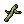
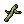
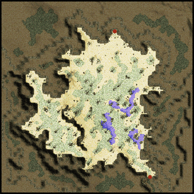
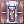
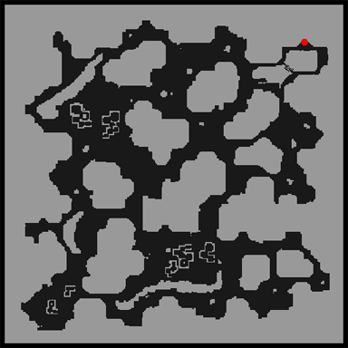

AloeLeaflet's Farming Places
Introduction
This is page is an extra page meant for the Farming Section of my Guide.
I'll be listing here the places where you can farm materials efficiently for your skills.
_________________________________________________________________________________________________________________________________________________________________________________________________________________
Place to farm Acid Demonstration requirements
_________________________________________________________________________________________________________________________________________________________________________________________________________________
To be able to cast Acid Demonstration you need both
 Acid Bottle and
Acid Bottle and  Bottle Grenade.
Bottle Grenade.
 Immortal Heart is the farmable part to make Acid Bottle.
Immortal Heart is the farmable part to make Acid Bottle.
 Alcohol and
Alcohol and  Fabricare the farmable part to make Bottle Grenade.
Fabricare the farmable part to make Bottle Grenade.
Green Operation Coat [1] and  Scalpel [3] combo is VERY useful for farming these, if you have these gears, all you need is to kill Demi-Human or Animal/Brute monsters to make them drop the materials.
Scalpel [3] combo is VERY useful for farming these, if you have these gears, all you need is to kill Demi-Human or Animal/Brute monsters to make them drop the materials.
_________________________________________________________________________________________________________________________________________________________________________________________________________________
Place to farm Immortal Heart and Alcohol if you don't have Green Operation Coat [1] and Scalpel [3] combo
_________________________________________________________________________________________________________________________________________________________________________________________________________________
| Materials | Monster to kill | Way to go on the Map |
|---|---|---|
| Immortal Heart
|
 - Verits - Verits
|
 ---> ---> ---> --->
then just follow the orange line. |
For Alcohol, it's a little bit different, you can either create them through  Pharmacy then you must farm both  Stemand
Pharmacy then you must farm both  Stemand  Poison Spore, or you can convert 50 Orcish Voucher and 40
Poison Spore, or you can convert 50 Orcish Voucher and 40  Skel-Bone via Change Material
Skel-Bone via Change Material
| Materials | Monster to kill | Way to go on the Map |
|---|---|---|
| Stem |  - Mandragora - Mandragora
|
--->
|
| Poison Spore( Keep Karvodailnirol
it is used by Guillotine Cross Class) |
 - Poison Spore - Poison Spore
|
--->
|
| Orcish Voucher |  - Orc Warrior - Orc Warrior
|
 ---> --->
the entrance, then go outside the building.
|
| Skel-Bone
|
 - Orc-Skeleton - Orc-Skeleton
|
--->
bottom right. |
_________________________________________________________________________________________________________________________________________________________________________________________________________________
Place to farm Immortal Heart and Alcohol if you have Green Operation Coat [1] and Scalpel [3] combo
_________________________________________________________________________________________________________________________________________________________________________________________________________________
| Monster to kill | Way to go on the Map | Notes | |
|---|---|---|---|
| - Orc Warrior
|
--->
the entrance, then go outside the building. |
You can also keep Orcish Voucherfor converting. | Be careful, MVP Orc Lord spawns here.
|
 - Vanberk - Vanberk
|

|
You can also farm  Beret(ingredient for Feather Beret). Beret(ingredient for Feather Beret).
This is also a good map to farm Zeny (@autoloot everything). Hodremlins also drops | |
 - Desert Wolf - Desert Wolf
|
--->
at the entrance. |
You can farm and keep  Blood of Wolf(ingredient for Warg Blood Cocktail), Blood of Wolf(ingredient for Warg Blood Cocktail),
And NPC sell | |
|
|
This place is pretty small but the monsters are plenty, be careful to not die.
Just kill everything, you can keep |
Be careful, MVP Leak spawns here.
|


_________________________________________________________________________________________________________________________________________________________________________________________________________________
Place to farm Fabric
_________________________________________________________________________________________________________________________________________________________________________________________________________________
| Monster to kill | Way to go on the Map | Notes | |
|---|---|---|---|
 - Wraith - Wraith
|
 ---> --->
|
Be careful for the MVP Dark Lord in the second map.
| |
 - Evil Nymph - Evil Nymph
|
 ---> ---> ---> --->
|
In this map, you don't exactly farm Fabric,
instead you farm into |
Be careful, MVP Evil Snake Lord spawns at 3rd floor.
|


_________________________________________________________________________________________________________________________________________________________________________________________________________________
Place to farm Full Chemical Protection requirements
_________________________________________________________________________________________________________________________________________________________________________________________________________________
To be able to cast  Full Chemical Protection (or any other Chemical Protection skill) you will need 1 Glistening Coat.
The farmable ingredients for Glistening Coat are
Alcohol,  Heart of Mermaid and
Heart of Mermaid and  Zenorc's Fang.
Zenorc's Fang.
For the Alcohol part, you can refer to the Acid Demonstration requirements section.
_________________________________________________________________________________________________________________________________________________________________________________________________________________
Place to farm Heart of Mermaid
_________________________________________________________________________________________________________________________________________________________________________________________________________________
| Monster to kill | Way to go on the Map | Notes |
|---|---|---|
 - Iara - Iara
|
--->
|
Be careful, MVP Boitata spawns at the 2nd floor.
|

_________________________________________________________________________________________________________________________________________________________________________________________________________________
Place to farm Zenorc's Fang
_________________________________________________________________________________________________________________________________________________________________________________________________________________
| Monster to kill | Way to go on the Map | Notes |
|---|---|---|
--->
bottom right. |
You can also keep Skel-Bone if you kill some Orc Skeletons.
|